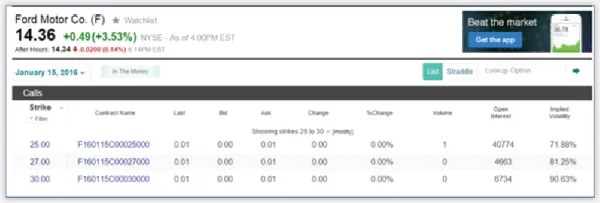
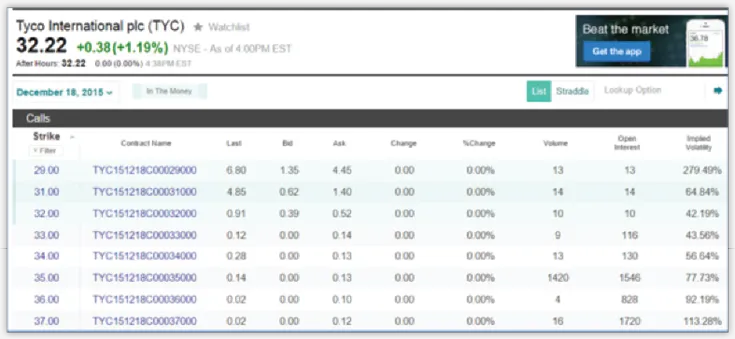
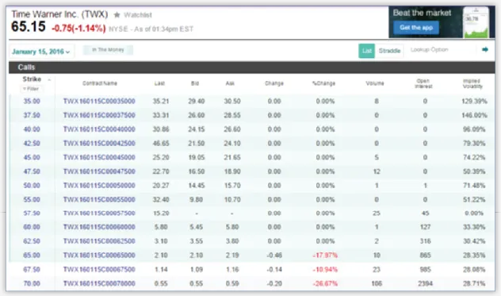
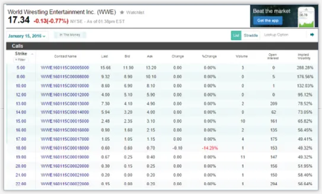
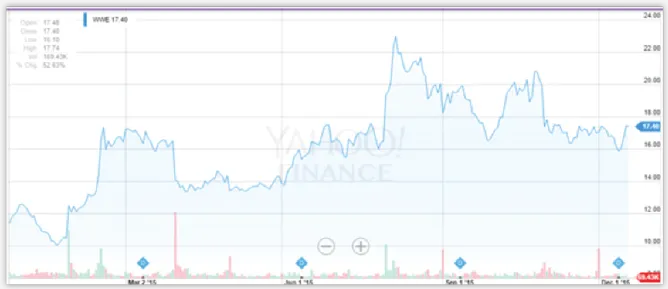
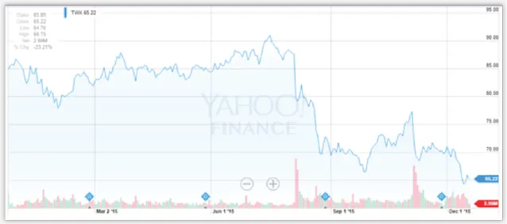
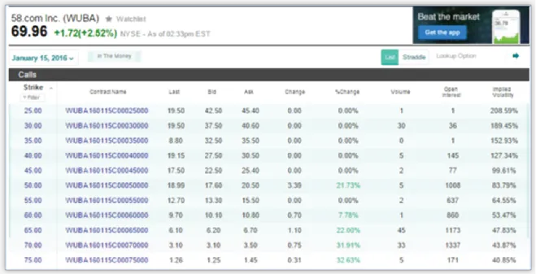
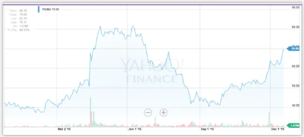
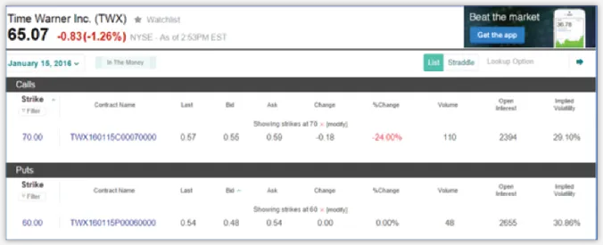
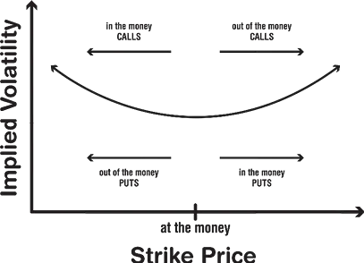

The price of a given option at any point in time is influenced by several factors. In this chapter, you’ll learn about the most important factors that affect how much you will pay for an option (or how much you will receive for selling one).
You may be thinking that options trading is essentially a bet that a stock
is going to either rise or decrease in value, which will in turn make a given
option valuable or worthless. Why should you care about other factors?
While the price of the underlying asset (the stock) is certainly a huge
factor in determining the value of an option, it’s most assuredly not the only
one. Remember, most of the options you end up owning you will resell, not
execute. The goal is essentially the same as it is with any other portfolio
strategy: you want to buy low and sell high, and in order to carry out this
strategy intelligently, you need to know all of the intricacies that go into
determining the price for a given option.

Perhaps George Fontanills puts it best, “The primary reason [for understanding the key influencers of options pricing] is that understanding the key price influences is the simplest method to establish realistic expectations for how an option position is likely to behave under a variety of conditions.12”
Chapter 3 talked about the concept of being in the money (ITM) or out of the money (OTM). The difference between an option’s set strike price and the price of the underlying asset or stock is known as the moneyness factor, and Fontanills argues that moneyness is the most critical determinant of an option’s price. You can see the moneyness factor at work in virtually any option chain. Take, for instance, an option chain for Tyco International.
In Fg. 12 a series of call options are listed for Tyco International (TYC), complete with the current bid and ask prices. The per share price of TYC is $32.22, and the strike prices for the call options range from $29 to $37. Since these are call options, any strike price below the current price is said to be ITM. As you are sure to see in most any option chain, options become less expensive the less in the money and the more out of the money they become.

The second most critical factor that influences an option’s price is the time of expiration on the contract. As was stated in Chapter 2 and emphasized continually by writer and trader, Edward Olmstead, “time is money.” The time factor is also the most important distinction between owning a stock and owning an option. Because options lose their value over time, they are considered wasting assets. The phenomenon of an option losing value over time is commonly referred to as time decay.
In Olmstead’s book, Options for the Beginner and Beyond, he offers a really interesting way to think about time value – in terms of hype. Olmstead compares the expensive option contract with lots of time left until expiration to a hot, flash-in-the-pan Christmas toy whose hype drives its price up, but only on a temporary basis. Also, rather than “moneyness,” Olmstead uses the term intrinsic value and his explanation of time value (or hyped value) in relation to intrinsic value is quite useful. He suggests that the hyped value of an option can be seen clearly as what’s left over after the option’s intrinsic value has been taken into account13.
Let’s take Olmstead’s theory and apply it to a specific case study. For instance, let’s say you’ve got 100 shares of Alphabet Inc. valued at $758.09 per share (GOOG), which is going to cost you about $75,809. You can buy a call option with a $750 strike price for about $10.60 per share. This option is in the money (ITM), and its intrinsic value can be calculated by subtracting the strike price ($750) from the price of the asset itself ($758.09), which leaves you with $8.09 for the intrinsic value. That’s about $2.50 less than the price of the option. Therefore, as Holmstead might say, the leftover $2.50 is the “hyped value” or time value of the option. As it turns out, you’re looking at a call option that expires in only 3 days, so that explains the relatively small hype value/time value.
Let’s look at that same option, but with a more substantial duration remaining on the contract. Let’s do a contract of five weeks rather than three days and see what happens. It turns out that the same option is now going to cost you $26 per share. The intrinsic value hasn’t changed, it’s still $8.09 or ($758.09-$750), but that’s because you’re looking at an option with 5 weeks (35 days) left in the contract, as opposed to 3 days. Subtracting the intrinsic value of $8.09 from the price of the new option, $26, leaves you with $17.91 in “hyped value.”
Now let’s take that last example in which you calculated a time value/hype value of $17.91 and take a look at the put option for the same stock (GOOG) at the same strike price ($750) and for the same 35-day period. It’s no accident that you find that put option priced at $17.87, essentially the same price as the time value of the call option. This is no coincidence. The reasons are rather complicated and perhaps beyond the scope of this beginner-level text, but what’s important to accept is that time value/hype value should always be consistent between calls and puts when you’re dealing with both the same underlying asset and the same strike price.
Volatility refers to the propensity of a certain financial instrument to
significantly fluctuate in value over time.
When you think rationally about what makes an option profitable, you
will come to the conclusion that there must always be some significant
movement in the price of the option, driven by movement in the price of the
underlying asset that outpaces the time-decay, which devalues the option.
Therefore, if you purchase an option that’s not inclined to fluctuate much in
price, then there’s a much slimmer chance that your option will end up big
in the money. On the other hand, if your option is volatile and subject to
wide swings in pricing, then you’ve got a chance to make a big profit.
The way volatility is evaluated and used in trading options is one of the
key distinctions between trading in options and trading in conventional
stocks. With a conventional stock, high volatility means that not only can
you profit big, but you can also lose big. When you own an option, it’s
either going to be exercised or it’s not. If things go really badly and the
numbers move against your option with extreme prejudice, the end result is
that the option will expire without ever being exercised. The same end
result will occur if your option finishes its contract just barely out of the
money. Therefore, according to this logic, the ability of volatility to hurt
you is limited, whereas its ability to help you is unlimited.
While it’s good to understand the nature of the playing field you’re dealing with when trading options, it does get a little more complicated when you consider the fact that your options can be sold before the expiration date to help you turn a profit or limit a loss. If the option dramatically plummets in price, and you sell it off for much less than what you paid for it, then you may find yourself wishing you’d bought a less volatile option. Generally, though, volatility is going to increase the premium of an option, because there is a greater chance that on any given day during the contract, the underlying asset will jump deep into the money and the option owner will have more chances to either sell off the option at a profit, or to exercise the option for a profit.
There are several ways to evaluate volatility. In options trading, historical volatility and implied volatility are commonly utilized metrics. Historical volatility refers to the observed behavior of a given financial instrument in terms of price fluctuation in the past. Implied volatility, often referred to as “IV”, by contrast, is an assessment of the asset’s potential for future volatility and considered by some to be the quintessential metric determining an options chance of becoming profitable.
Implied volatility is generally expressed in percentages. In his book, The Options Course, Harvard MBA graduate, George Fontanills claims that any implied volatility lower than 20 percent is considered low15 . Let’s see if we can witness the influence of implied volatility in the real marketplace.
In Fg. 13, look at the $70 call option, way at the bottom of the list. It’s nearly $5 out of the money and will sell for about 57 cents per share (somewhere between $.55 and $.59). The implied volatility, which can be found in the column at the far right hand side, is 28.71 percent.

Now, let’s take a look at the more volatile WWE call options with the same expiration date:

If you look at the very bottom of the of your option chain you’ll find a call option with a $22 strike price that can be had for at least 20 cents per share if not cheaper. Like your Time Warner, this option is a total of $5 out of the money and its IV rating is nearly double that of Time Warner at 56.64%. So, with such a high volatility rate, why is the WWE option $5 out of the money almost half the price of the Time Warner option, also $5 out of the money? The answer: scaling.
WWE stock is worth $17.33 per share, whereas Time Warner is worth $65 a share. For the cheaper WWE stock, $5 OTM is a much more significant hurdle to overcome for the option to ever be profitable, even with a higher implied volatility. The lesson here is that the volatility is scalable to the price of a stock, hence it’s expressed as a percentage value.
If you look at WWE’s performance over the last year (Fg. 15), you’ll notice that the only discernible spike in the value of the stock cleared the $22 threshold. Therefore, in order for that $22 call option to be profitable, you’d need the stock to return to that level by January 15th, or at least get close enough to it before the expiration date in order to resell this option at a profit. It doesn’t look very likely—hence, buying the call would only cost you 20 bucks.

Let’s look at the same 1-year graph for Time Warner:

Unlike WWE, TWX has spent plenty of time over the last year trading above the $70 strike price. It looks like things were a bit dicey through the fall, but there’s still been movement above $70. This looks like a more promising option than the WWE purchase, and, of course, it’s a little more expensive. But before you pay the $57 to buy the option, you should probably try to get a read on what caused TWX to plummet during the late summer and early fall, and whether or not there’s a decent chance for a bounce back within the next month.

Let’s take a look at a stock that trades at a similar price point as TWX.
The 58.com Inc. stock (WUBA) is currently trading at near $70. When you locate the $75 call option for WUBA—that’s $5 out of the money (see the bottom most call option listing in Fg. 16)—you’ll notice that the implied volatility percentage is greater than it was with the TWX stock, nearly 41%, compared to 29%. The price of the WUBA option is significantly more expensive, about $1.35 per share compared to TWX’s 57 cents. That’s a hefty price differential for a similar position on a similar stock. Perhaps there are more forces at work driving up the price of the WUBA Jan 75 call. Let’s take a look at the stock’s performance this year.

There are two things that stand out blatantly in WUBAs performance over the last 12 months (within the context of the potential purchase of the Jan 75 call option). It looks like the stock traded at over $75 last spring for some time, then dropped off. But it also appears that the stock is beginning to ascend in value, so maybe it’s due to keep ascending.
It’s the opinion of this author that the extra hefty price for the WUBA call is mainly due to the apparent ascending trend. WUBA looks to be on the way up, whereas fewer people are inclined to believe that TWX is going to rebound any time soon. Not to mention the fact that WUBA has greater overall implied volatility.
Just for kicks and insight, let’s do a similar comparison between these two similar stocks on the other end of the option spectrum. Let’s look at a put option for TWX that’s likewise $5 out of the money:

In the image above you can see that there is similar pricing and similar implied volatility between the put and the call options, each $5 OTM. The put option is slightly less expensive, most likely because, as shown in the graph on Fg. 16, TWX doesn’t have an immediate history of sinking below $60, whereas it’s spent a whole lot of time upwards of $70.
Options traders largely rely on the strategy of searching for discrepancies between a stock’s historical volatility and its implied volatility. If an options trader can spot an option with an implied volatility that’s too low given its historical volatility, then that option is said to be cheap and may prove to be a good deal. If the historical volatility indicates that an option’s implied volatility is too high, then the option is thought to be expensive and should be sold if possible. Traders are also looking for mismatches between the implied volatility of an option and the volatility of its underlying asset. If the asset is more volatile than the options with which IV credits it, then you’ve got an option worth buying. If the asset is more stable than is reflected by the IV, sell it away16.
Implied volatility is a concept that you understand more the more often you use it. As Michael Sincere says, “To demonstrate how difficult it is to define, I’d like you to answer a question. Can you define gravity?” Sincere goes on to offer a very psychologically-focused explanation of implied volatility: “It’s the urgency, or expectation, that the stock price might undergo a big change that drives traders to bid-up the options (forcing both the premium and implied volatility higher).17”

Though interest rates and dividends aren’t as important as the other
factors influencing options pricing, they still must be acknowledged. When
interest rates (the cost of borrowing money) go up, the price of calls
generally increase and puts decrease. The opposite is true when interest
rates go down.
When dividends of the underlying asset increase, the price of calls
decrease and the price of puts increase. When dividends decrease, the
opposite occurs18.
We won’t get into the specific mechanisms of these rather
negligible factors in this text.
The next chapter drills down even further on option evaluation metrics by
offering information about the “Greeks.”